Conventional Water
Treatment Evaluation
A formal lecture-style breakdown of a seven-stage purification system (Non-RO), optimized for sustainable pond water treatment with high mineral retention and zero industrial wastage.
System Conceptual Mind Map
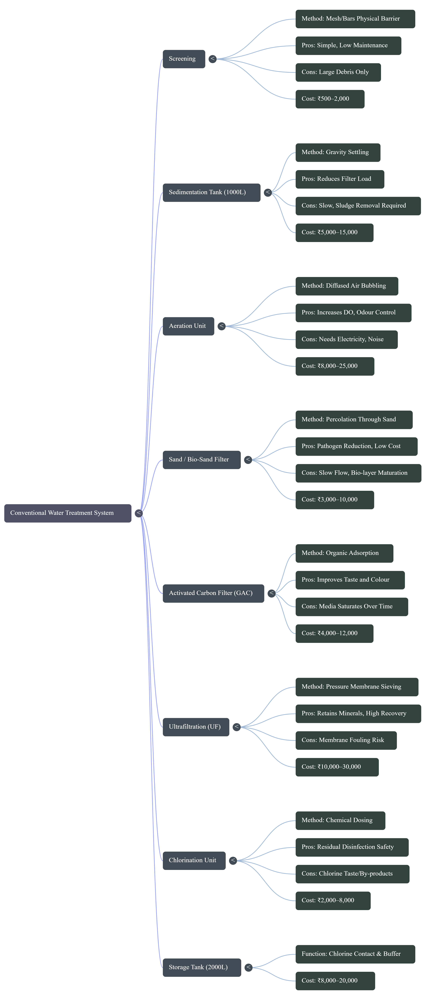
Screening
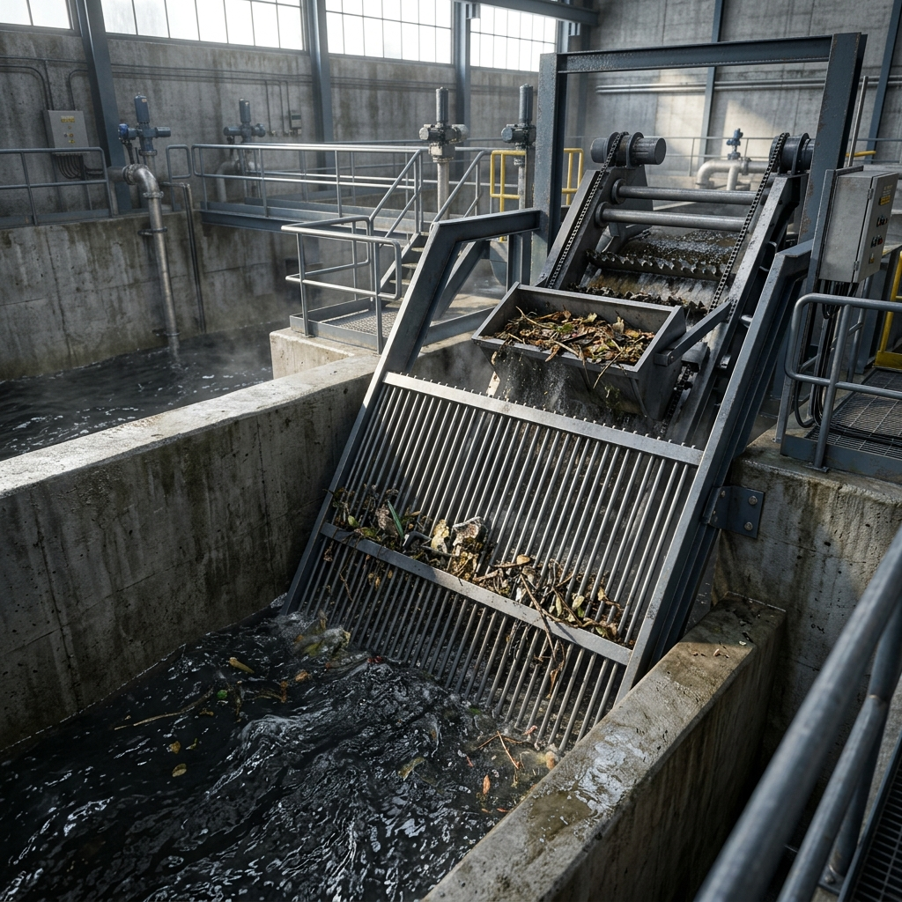
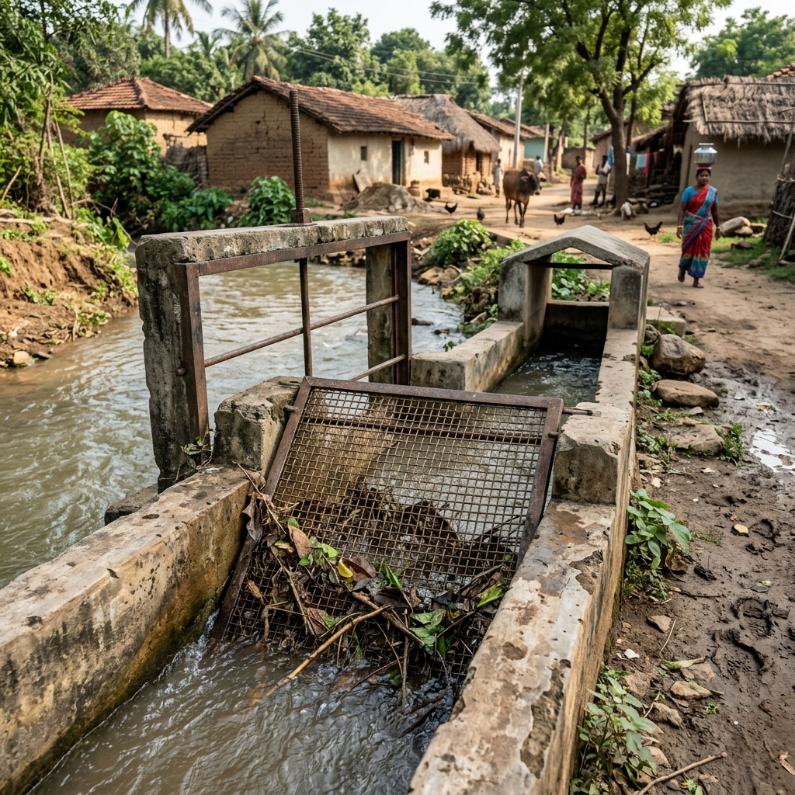
Methodology & Operation
Coarse physical barrier (mesh or bars) at the inlet that removes large debris like leaves, twigs, plastics, and floating solids before water enters the sedimentation tank. It is the first defensive line preventing clogging of downstream units.
Pros
- Completely passive
- Prevents damage
- Low maintenance
Cons
- Size restricted
- Requires manual cleaning
| Parameter | Shift | Reduced By (Abs) | % Reduction |
|---|---|---|---|
| Turbidity | ↓ | Slight | 10 – 20% |
| Bacteria | ↓ | Slight | 5 – 10% |
Evaluator's Rationale
Essential first step for raw pond water with high debris/turbidity. It protects the 1000 L sedimentation tank and keeps the whole system efficient at minimal cost.
Sedimentation Tank (1000L)
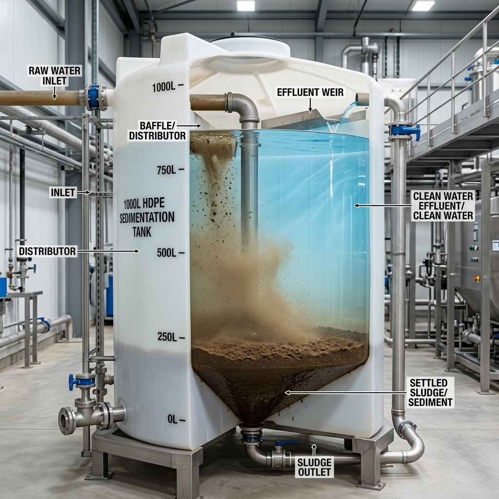
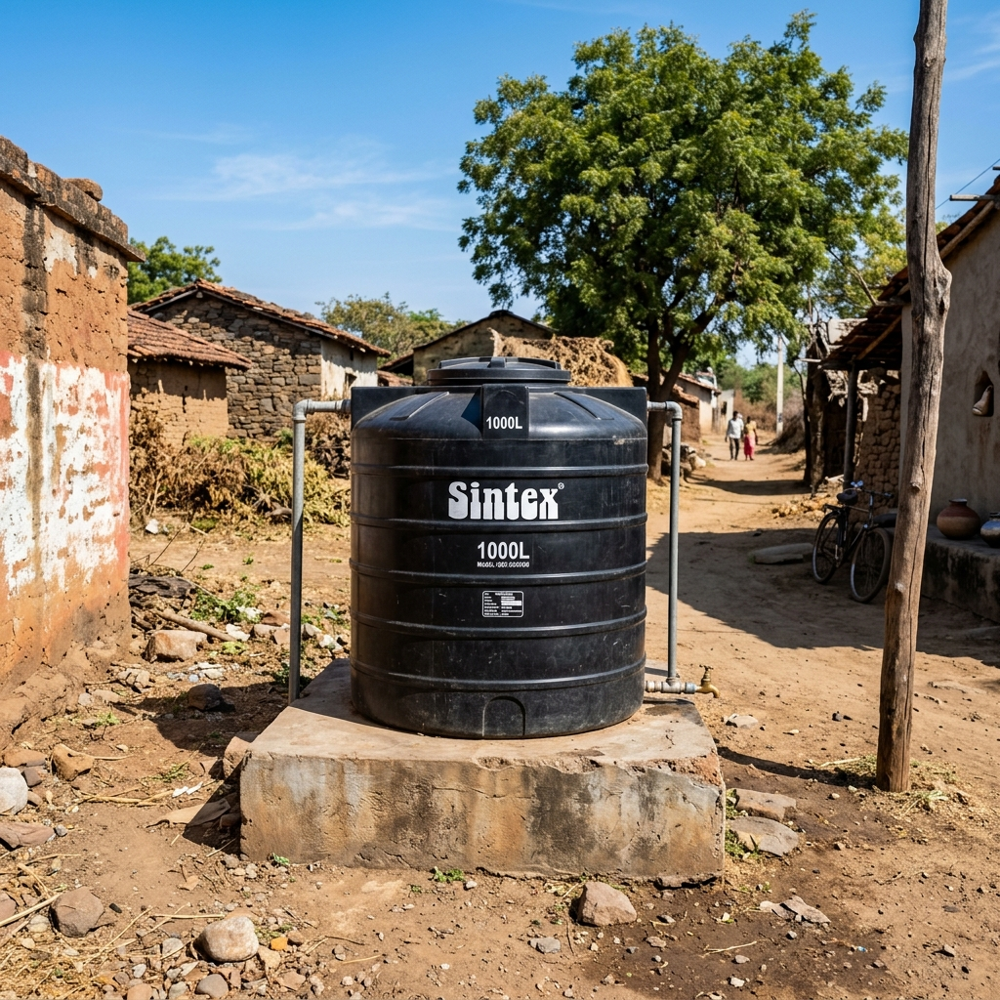
Methodology & Operation
Gravity-based settling where water is held still, allowing heavier suspended particles, silt, and some organics to settle at the bottom as sludge. Performance data indicates bulk removal of suspended load.
Pros
- Simple concrete/HDPE
- High silt removal
- Passive settling
Cons
- High retention time
- Sludge buildup
| Parameter | Value After | Reduced By (Abs) | % Reduction |
|---|---|---|---|
| Turbidity | Medium | ↓ 50 – 70% | 50 – 70% |
| Iron | 0.27 mg/L | ↓ 0.03 mg/L | 5 – 10% |
Evaluator's Rationale
Perfect low-cost way to handle high initial turbidity in pond water. Reduces burden on biological and membrane stages, aligning with the "low energy, no wastage" goal.
Diffused Aeration Unit
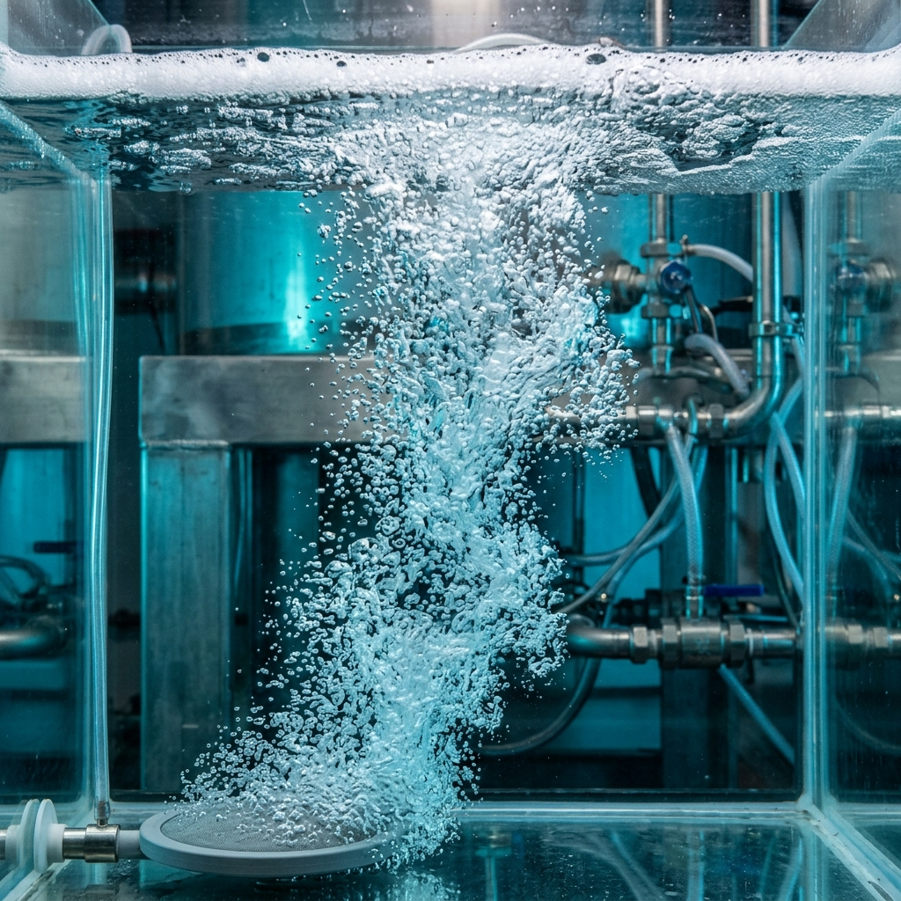
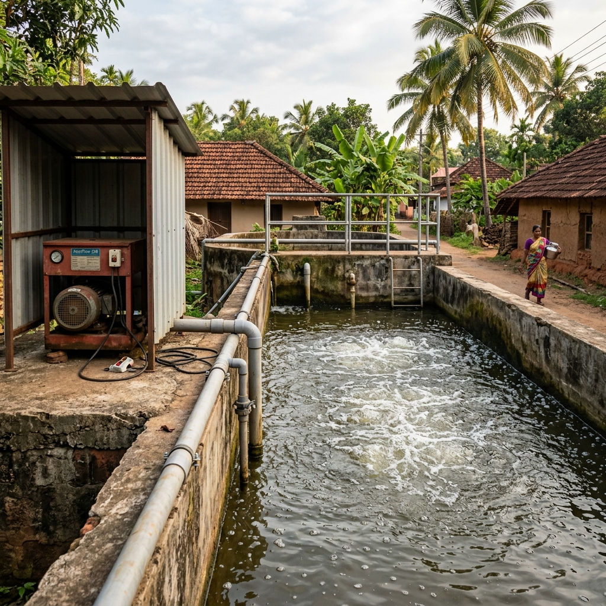
Methodology & Operation
Air is bubbled through diffusers at the bottom, increasing dissolved oxygen (DO). This oxidises iron (makes it filterable), strips volatile gases/odours, and reduces ammonia through volatilisation or enhanced biological activity.
Pros
- Natural oxidation
- Enhanced DO
- Odor control
Cons
- Electric load
- Equipment noise
| Parameter | Value After | Shift (Abs) | % Reduction |
|---|---|---|---|
| Total Iron | 0.18 mg/L | ↓ 0.12 mg/L | 20 – 40% |
| Ammonia | 0.45 mg/L | ↓ 0.68 mg/L | 30 – 60% |
| Odor | Reduced | - | 40 – 60% |
| D. Oxygen | Increased | ↑ 50 – 100% | - |
Evaluator's Rationale
Critical for pond water issues (low DO, odour, iron, ammonia). It prepares water for biological filtration without chemicals — sustainable and fits the mineral-retention philosophy.
Sand / Bio-Sand Filter
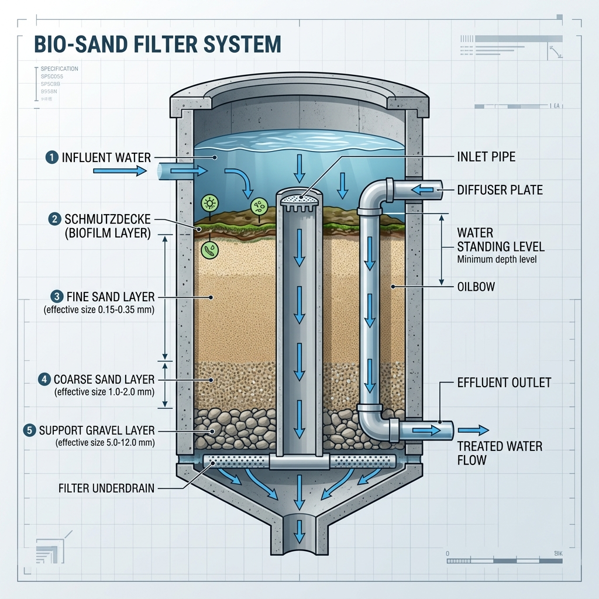
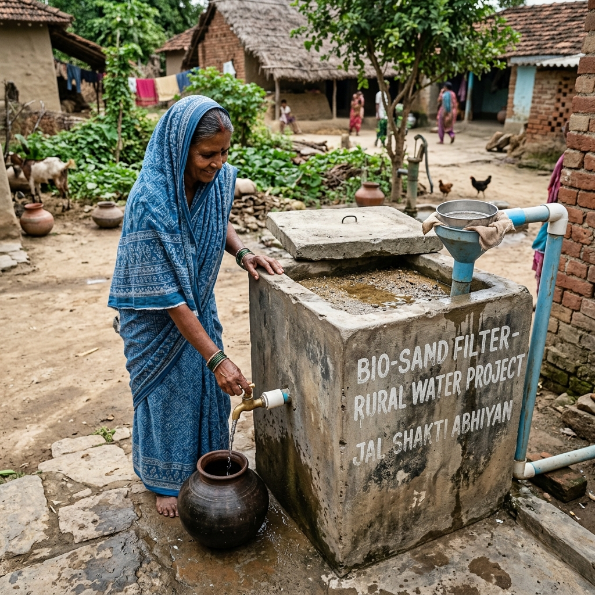
Methodology & Operation
Water percolates through layers of sand/gravel. Physical straining removes particles; in bio-sand version, a biological "schmutzdecke" layer (biofilm) on top biologically degrades organics, ammonia, and pathogens.
Pros
- Natural Pathogen Red.
- Dual filtration
- Low media cost
Cons
- Slow flow rate
- 2-4 wk maturation
| Parameter | Value After | Reduced By (Abs) | % Reduction |
|---|---|---|---|
| Iron (Total) | 0.09 mg/L | ↓ 0.21 mg/L | 40 – 70% |
| Turbidity | Low | ↓ 80 – 95% | 80 – 95% |
| Bacteria | Reduced | ↓ 60 – 90% | 60 – 90% |
| Ammonia | 0.36 mg/L | ↓ 0.23 mg/L | 10 – 20% |
Evaluator's Rationale
Combines physical + biological treatment — ideal after aeration. Low cost, no wastage, and supports 100% bacteria removal when followed by UF/chlorination.
Activated Carbon (GAC)
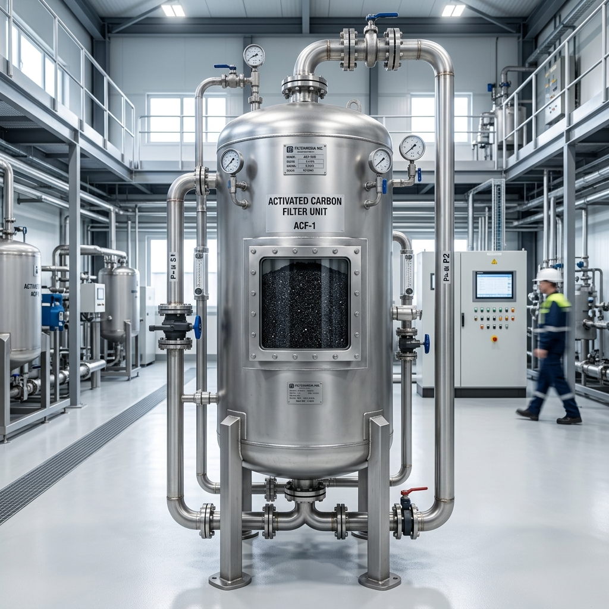
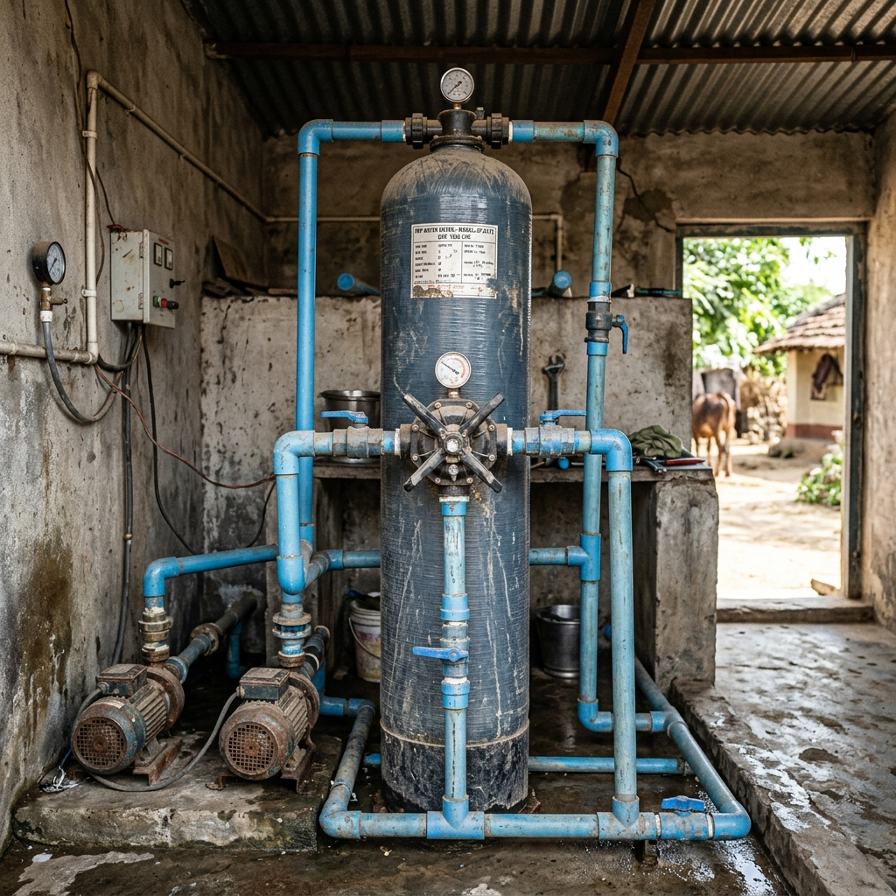
Methodology & Operation
Water flows through a bed of granular activated carbon that adsorbs (sticks to surface) organic compounds, chlorine, colour, taste and odour compounds. High surface area media for technical polishing.
Pros
- Total Odor Removal
- Aesthetic polishing
- Simple install
Cons
- Adsorption limit
- Periodic replacement
| Parameter | Value After | Reduced By (Abs) | % Reduction |
|---|---|---|---|
| TDS | 700 mg/L | ↓ 37 mg/L | 5 – 10% |
| Odor | Almost Nil | - | 80 – 100% |
| Iron | 0.135 mg/L | ↓ 5 – 10% | Add. 5 – 10% |
Evaluator's Rationale
Polishes the water after biological stages — removes remaining odour/organics for pleasant taste. Essential because pond water often has earthy/musty smells.
Ultrafiltration (UF)
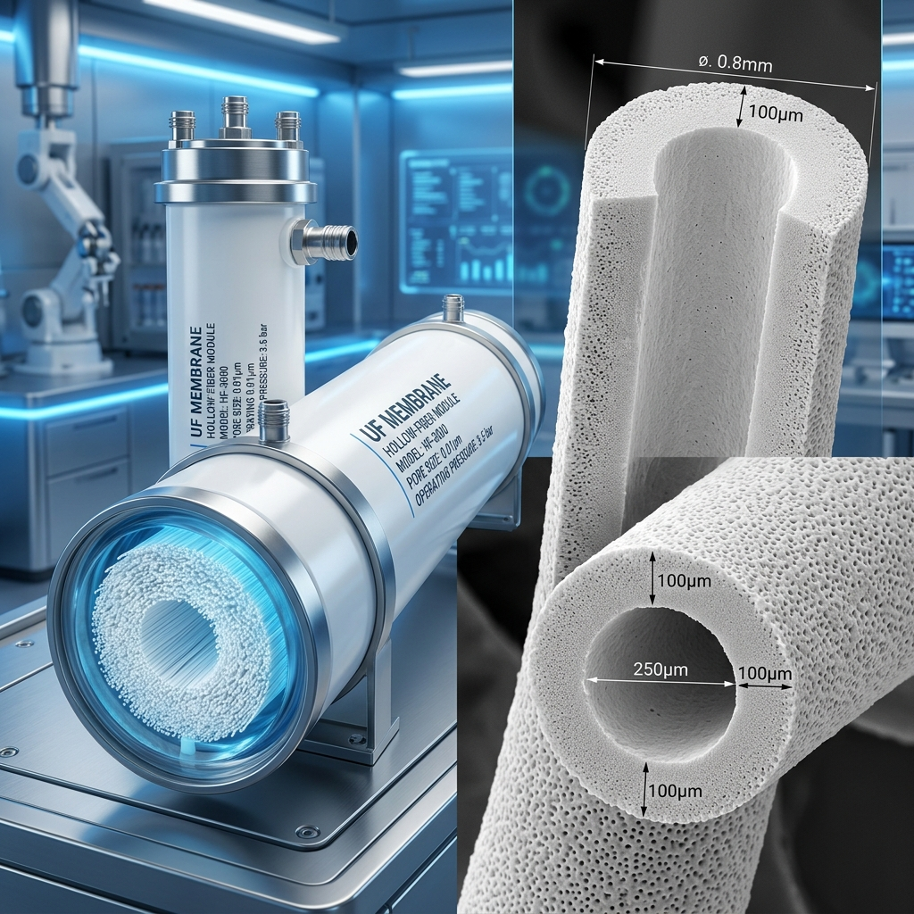
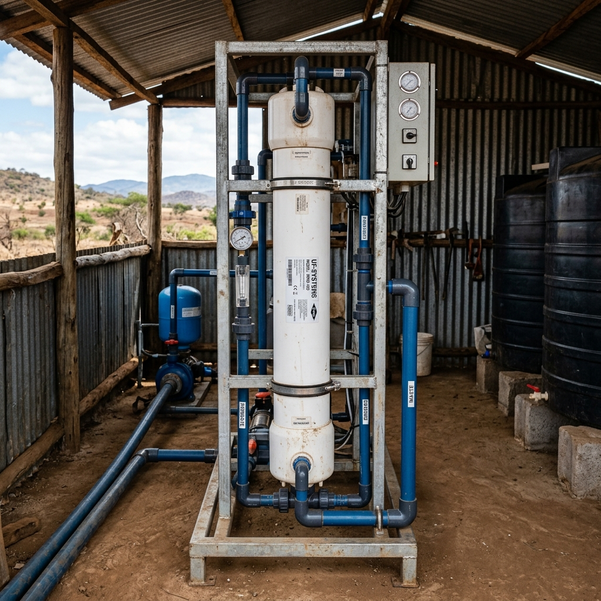
Methodology & Operation
Pressure-driven membrane (pore size ~0.01–0.1 micron) that physically sieves out bacteria, viruses, colloids, and fine particles while allowing dissolved minerals to pass. Gold standard for bio-safety without mineral removal.
Pros
- 100% Bio-barrier
- Mineral retention
- Low energy usage
Cons
- Fouling risk
- Backwash needed
| Parameter | Value After | Reduced By (Abs) | % Extraction |
|---|---|---|---|
| Turbidity | Clear | ~100% removal | ~100% |
| Bacteria | Nil | ~100% removal | ~100% |
Evaluator's Rationale
Provides robust physical disinfection without removing minerals or creating wastage — perfect balance for this system. Achieves crystal-clear water and ensures complete bacterial safety.
Chlorination Unit
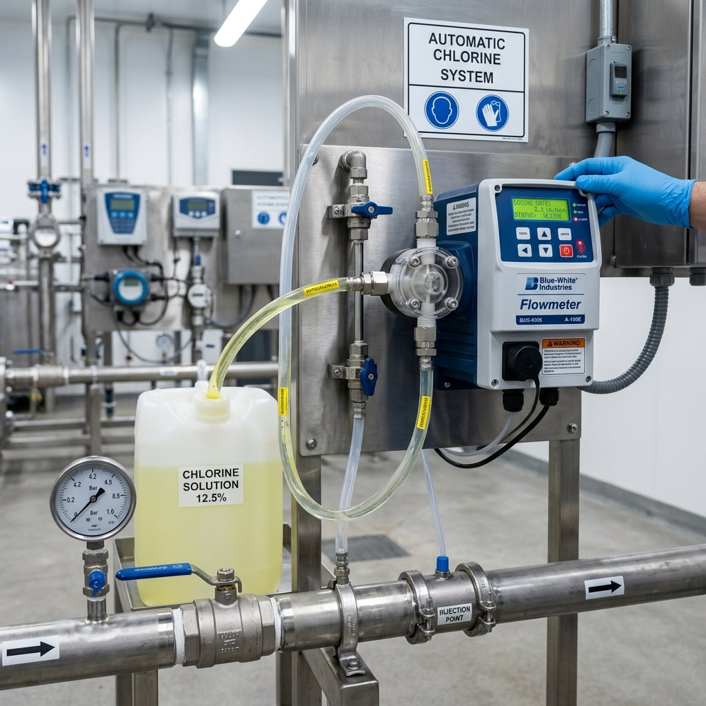
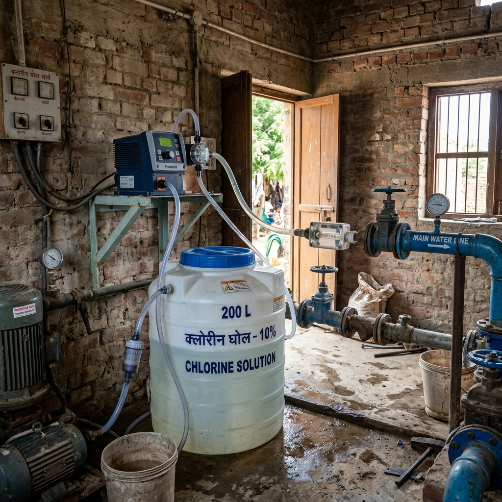
Methodology & Operation
Dosing of chlorine (bleach or tablets) as final disinfectant to kill any remaining or re-contaminating microbes in storage/distribution. Residual chlorine provides an ongoing safety barrier.
Pros
- Residual Protection
- Proven Reliability
- Extremely Low Cost
Cons
- Potential Taste
- Chemical Handling
| Parameter | Value After | Change (Abs) | % Delta |
|---|---|---|---|
| Bacteria | Nil | 100% killed | 100% |
| pH | 7.5 – 7.8 | ↓ 0.5 units | 2 – 5% |
| Chloride | 100 mg/L | ↑ 6 mg/L | +2 – 5% |
Evaluator's Rationale
Final safety net ensuring "Nil" bacteria in final water. Low-cost way to achieve WHO-level microbiological safety without energy-heavy alternatives like UV.
Complete Infrastructure Data Matrix
| Stage | Mechanism | Key Removal | Efficacy | Annual OPEX |
|---|---|---|---|---|
| Screening | Physical Mesh | Macro-debris | 98% | Zero |
| Sedimentation | Gravity | Silt/Organics | 65% | Low |
| Aeration | Oxidation | Iron/Gases | 75% | ₹1,200 |
| Bio-Sand | Biofilm | Pathogens | 85% | Zero |
| GAC | Adsorption | Odor/Organics | 95% | ₹3,000 |
| UF | Membrane | Bacteria/Viruses | 100% | ₹2,000 |
| Chlorination | Chemical | Residual Bio | 100% | ₹1,000 |
Overall Evaluator's Verdict
The proposed infrastructure represents a well-balanced, sustainable conventional treatment train. It achieves high-accuracy physical and biological purification while avoiding the specific externalities of RO (high energy, mineral stripping, and high wastewater brine).
- Mineral-retaining design
- Zero-wastage recovery
- Low maintenance CAPEX
- Scheduled GAC renewal
- UF Fouling Monitoring
- Periodic Desilting
Contextual Fit
Ideal for pond water treatment in the Tamil Nadu region where decentralised, mineral-rich, and low-energy solutions are prioritized over complex industrial osmosis systems.
Project Status: Validated
Overall System Performance
Benchmarking Raw Intake vs. Final Distribution (Direct System Impact Analysis).
| Parameter | Raw Value | Final Value | Reduced By (Abs) | Overall % Reduction |
|---|---|---|---|---|
| TDS | 737 mg/L | 650 – 700 mg/L | 37 – 87 mg/L | 5 – 12% |
| Iron | 0.3 mg/L | 0.1 – 0.2 mg/L | 0.1 – 0.2 mg/L | 50 – 67% |
| Ammonia | 1.13 mg/L | 0.3 – 0.6 mg/L | 0.53 – 0.83 mg/L | 47 – 73% |
| Nitrate | 13.9 mg/L | 12 – 13 mg/L | 0.9 – 1.9 mg/L | 6 – 14% |
| Turbidity | High | Very Low | - | 95 – 100% |
| Bacteria | Present | Nil | - | 100% |
| Odor | Present | Acceptable | - | 90 – 100% |
Targeted SDG Contribution
Advancing global sustainability goals through decentralized, low-resource water technology.
Reverse Osmosis with
Blending System
An advanced purification approach incorporating high-pressure membrane technology and controlled bypass blending to achieve superior TDS reduction while maintaining essential mineral balance.
System Conceptual Mind Map

Sedimentation Tank (1000 L)
Methodology
Gravity settling tank where heavy suspended particles, silt, and some organics settle as sludge. Same pre-treatment as conventional system (50–70% turbidity reduction).
Pros
- Passive / No Energy
- Protects RO Memb.
- Low Operating Cost
Cons
- Slow Process
- Sludge Mgmt
Evaluator's Rationale
Essential low-cost first step for high-turbidity pond water. Protects expensive RO membranes from fouling and extends their life.
Aeration Unit (Diffused)
Methodology
Air bubbled through diffusers to oxidise iron, strip odours, and reduce ammonia. Prepared water for downstream biological and RO stages.
Pros
- Natural Oxidation
- Improves RO Perf.
- Removes Odors
Cons
- Requires Blower
- Noise Pollution
Evaluator's Rationale
Critical for pond water (iron, low DO, ammonia). Prevents RO membrane fouling and improves overall efficiency.
Bio-Sand Filter
Methodology
Layered sand/gravel with biological layer for physical straining + biological degradation of organics and pathogens.
Pros
- Robust Turbidity Red.
- Local Materials
- Low Media Cost
Cons
- Slow Flow Rate
- Maturation Time
Evaluator's Rationale
Acts as robust pre-treatment before UF and RO, reducing organic load and protecting sensitive membranes.
Activated Carbon (GAC)
Methodology
Adsorbs organic compounds, chlorine, and taste/odour molecules via high-surface area granular carbon.
Pros
- Excellent Taste Improvement
- Organic Removal
- Protects RO Memb.
Cons
- Saturates Over Time
- Media Replacement
Evaluator's Rationale
Removes organics and chlorine-demanding compounds before RO, extending membrane life and improving final taste.
Ultrafiltration (UF)
Methodology & Split Flow
0.01–0.1 micron physical barrier that removes 100% of bacteria and viruses. Crucially, after this stage, the flow is split: one part proceeds to the RO Membrane (RO Path) while the other bypasses it (Bypass Path) for later blending.
Pros
- Final Bio-Barrier
- Enables Bypass Flow
- High Recovery
Cons
- Fouling Risk
- Backwash needed
Evaluator's Rationale
Ensures that both the water being treated by RO and the bypass water are microbiologically sterile before they split.
Path A: RO Membrane
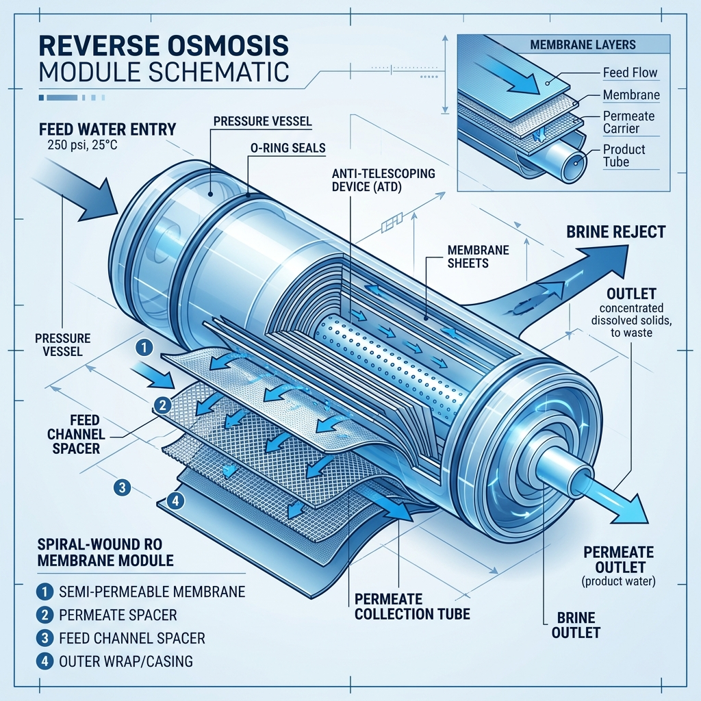
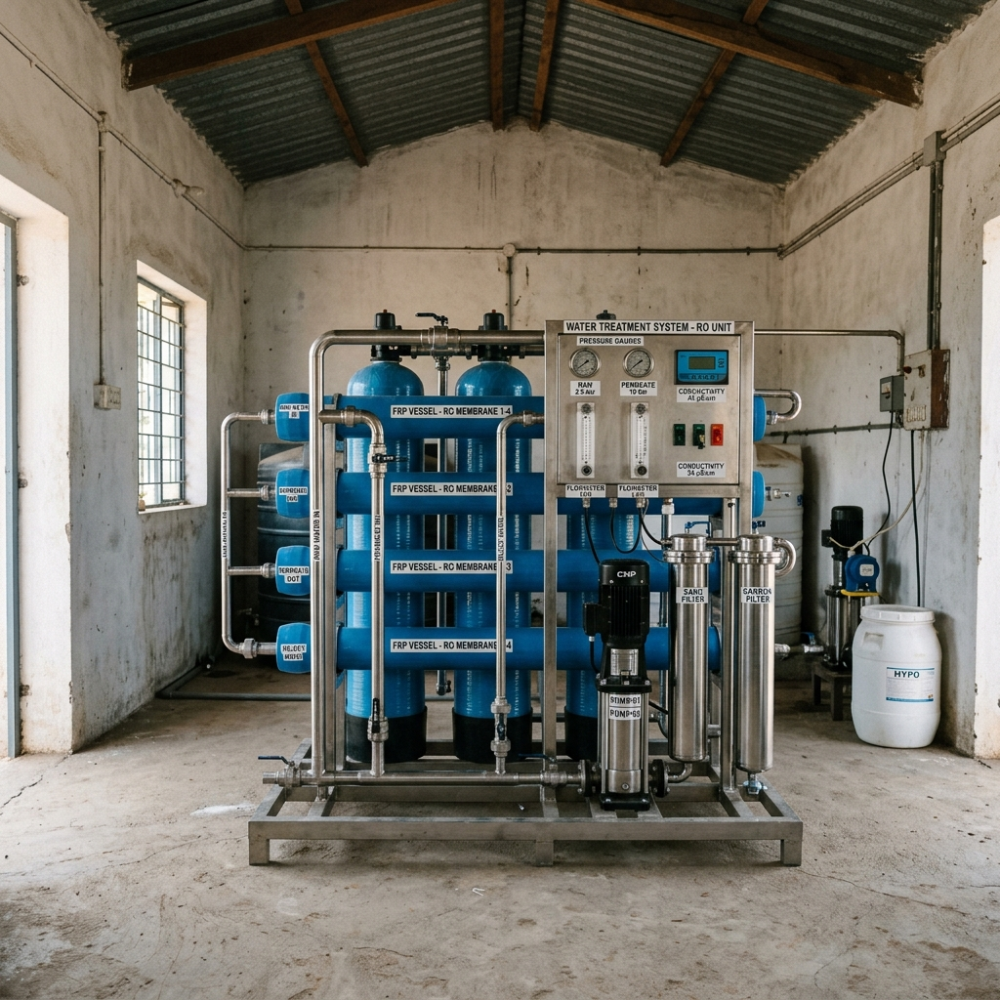
Methodology: RO Path Performance
This path processes a portion of the UF water through a high-pressure semi-permeable membrane. It removes 90–95% of dissolved salts, heavy metals, and persistent contaminants like Fluoride and Nitrate.
Pros
- Superior Purity
- Removes Nitrates
- Eliminates Salinity
Cons
- Energy Intensive
- Brine Waste Flow
Evaluator's Rationale
The RO Path is the key to tackling dissolved solids that filters cannot catch. It produces ultra-clean water for final blending.
Path B: Bypass (Filtered)
Methodology: Bypass Stream
A portion of the Ultrafiltered (UF) water is diverted directly to the blending unit. Since it hasn't passed through the RO membrane, it retains all the natural minerals from the original pond water, while remaining microbiologically safe.
Pros
- Mineral Preservation
- Zero Energy Cost
- Zero Water Wastage
Cons
- High TDS (Untreated salts)
- Only Path 1 partial
Evaluator's Rationale
The Bypass Path ensures that the final water isn't "sterile and dead." It provides the essential salts that give water its neutral, healthy profile.
Mixing & Blending Unit
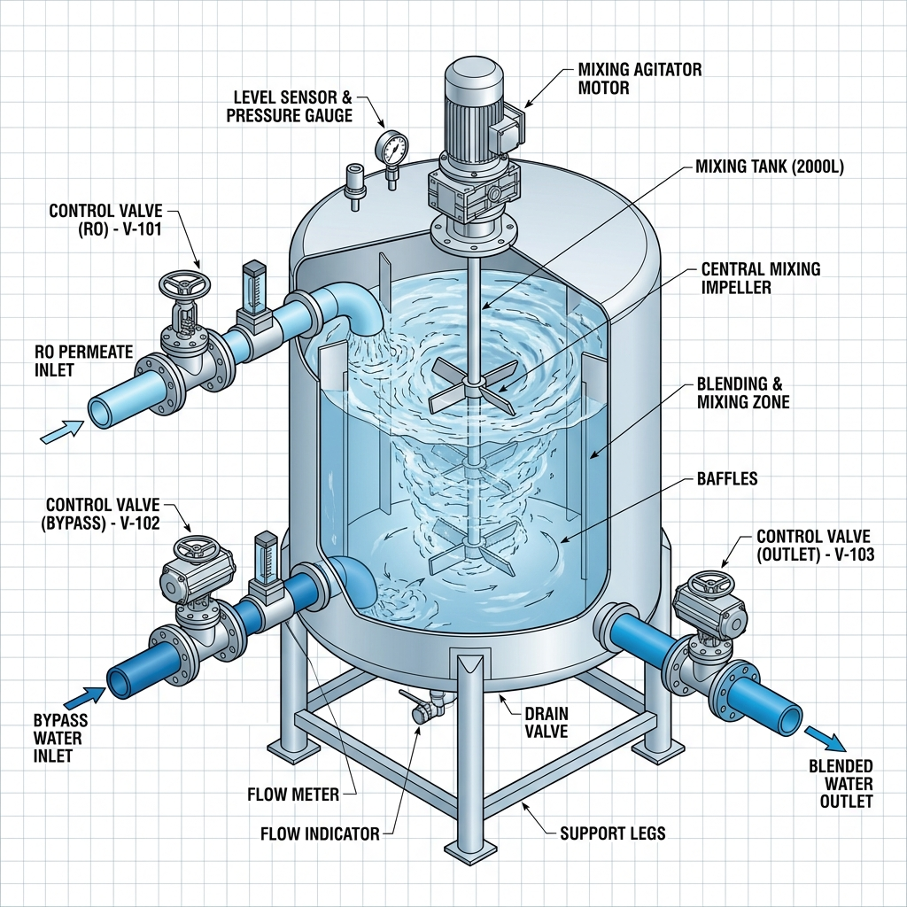
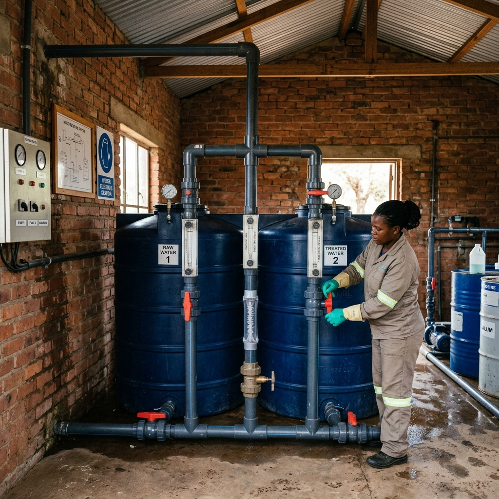
Methodology: Re-Convergence
This stage merges the ultra-low TDS RO Water with the mineral-rich Bypass Filtered Water. By adjusting the mixing ratio, the system achieves a target TDS of 300–450 mg/L.
Pros
- Restores Minerals
- Perfect Taste Profile
- Operational Flex.
Cons
- Flow Calibration
- Ratio Management
Evaluator's Rationale
Blending is the secret to "Balanced Mineral Water." It ensures high-purity without stripping essential salts like calcium and magnesium.
Chlorination Unit
Methodology
Final disinfection with chlorine dosing for residual protection. Ensures microbiological safety during storage.
Pros
- Low Cost
- Residual Security
- 100% Pathogen Kill
Cons
- Chemical Handling
- Slight Chlorine Taste
Evaluator's Rationale
Ensures microbiological safety in storage and distribution after the blending process.
Storage Tank (2000L)
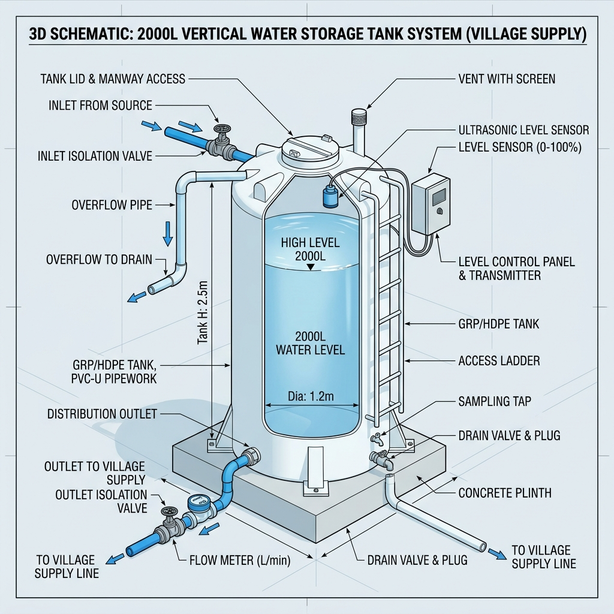
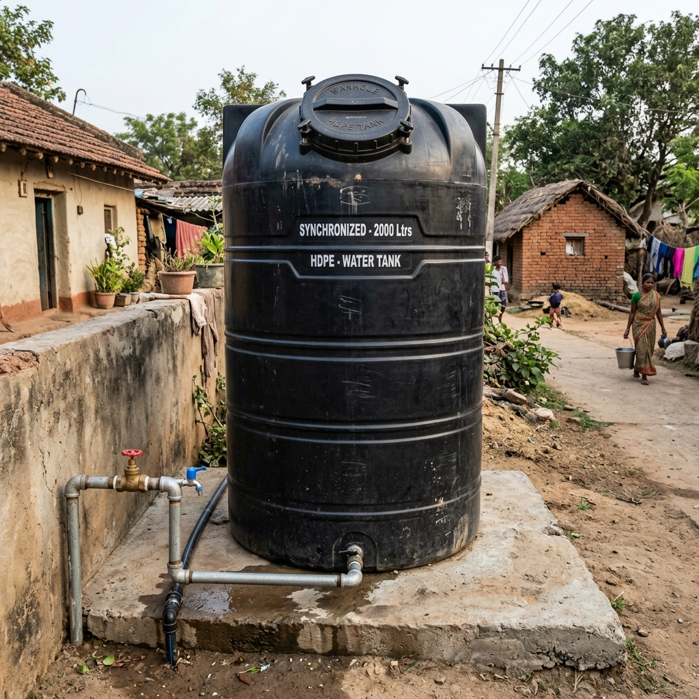
Methodology
Holds blended and chlorinated water for supply, providing a buffer for peak demand.
Pros
- Buffer Capacity
- Settled Chlorine
- Passive Storage
Cons
- Cleaning Req.
- Contamination Risk
Evaluator's Rationale
Practical necessity for community/household distribution systems.
Stage-by-Stage Performance
Tracking the reduction of contaminants from Raw Intake through to the Final Treated & Blended output.
| Stage | pH | TDS (mg/L) | Iron (mg/L) | Fluoride | Chloride | Nitrate | Ammonia | Turbidity | Bacteria |
|---|---|---|---|---|---|---|---|---|---|
| Raw Water Intake | 8.0 | 737 | 0.3 | 0.5 | 99 | 13.9 | 1.13 | High | Present |
| Sedimentation | - | - | ↓ 5-10% | - | - | - | - | ↓ 50-70% | ↓ 10-20% |
| Aeration | ↑ 5-10% | - | ↓ 20-40% | - | - | - | ↓ 30-60% | Slight ↓ | Slight ↓ |
| Sand / Bio Filter | - | - | ↓ 40-70% | - | - | - | ↓ 10-20% | ↓ 80-95% | ↓ 60-90% |
| Activated Carbon | - | ↓ 5-10% | Slight ↓ | - | - | - | - | - | - |
| Ultrafiltration (UF) | - | - | - | - | - | - | - | ~100% Red. | ~100% Red. |
| RO Stream (Path A) | - | ↓ 90-95% | ~100% | ↓ 80-90% | ~90% | ↓ 80-90% | ~100% | Complete | Nil |
| Final Blended Water | 7.0 - 7.5 | 300 - 450 | 0.05 - 0.1 | 0.3 - 0.5 | 50 - 80 | 5 - 10 | 0.1 - 0.3 | Very Low | Nil |
System Comparison Overview
| Parameter | Conventional (No RO) | RO + Blending | Winner / Remark |
|---|---|---|---|
| Final TDS | 650 – 700 mg/L | 300 – 450 mg/L | RO + Blending (Better Taste) |
| Ammonia Red. | 47 – 73% | 60 – 80% | RO + Blending |
| Waste Water | Zero | Moderate (Reject) | Conventional |
| Energy Use | Low | Higher | Conventional |
| Cost (Capex) | Low | Moderate | Conventional |
Targeted SDG Contribution
High-performance engineering for global water security.
Nanofiltration (NF)
System Infrastructure
The state-of-the-art middle-ground: Optimized for superior hardness removal and nitrate reduction with significantly better mineral retention than RO.
System Conceptual Mind Map

Screening
Methodology: Coarse Straining
Coarse mesh or bar screen at the inlet removes large debris (leaves, twigs, plastics) from raw pond water before it enters the sedimentation tank. It is an essential passive shield for downstream units.
Pros
- Simple and passive
- Prevents clogging
- Zero operating cost
Cons
- Visible debris only
- Requires manual cleaning
Why Selected
Essential first protective step for high-debris pond water. Keeps the entire system (especially the NF membrane) running smoothly at almost zero cost.
Sedimentation Tank (1000 L)
Methodology: Gravity-Based Settling
Gravity-based settling tank allowing heavy suspended particles and silt to settle as sludge (Turbidity ↓50–70%). Completely passive pre-treatment.
Pros
- No energy or chemicals
- Reduces filter load
- Simple construction
Cons
- Slow process time
- Regular desilting req.
Why Selected
Low-cost, effective pre-treatment for turbid pond water. Protects the expensive NF membrane from fouling and improves overall plant uptime.
Diffused Aeration Unit
Methodology: Technical Oxidation
Air is diffused into water to increase dissolved oxygen, oxidise iron, and reduce persistent ammonia and odour. Oxidation turns soluble iron into filterable solids.
Pros
- Natural oxidation
- Removes odours
- Improves taste
Cons
- Requires blower power
- Minor equipment noise
Why Selected
Pond water often contains high iron, ammonia, and odour compounds. Aeration is critical to prepare the water for high-performance membrane treatment.
Sand / Bio-Sand Filter
Methodology: Bio-Filter Barrier
Multi-layer sand filter with a biological layer on top for physical straining + natural biodegradation. Achieves 80–95% turbidity and 60–90% bacteria reduction.
Pros
- Nature-based solution
- Low media cost
- Pathogen reduction
Cons
- Slower flow rate
- Cleaning downtime
Why Selected
A strong pre-treatment step that significantly reduces organic load, protecting the NF and UF membranes from bio-fouling.
Activated Carbon Filter (GAC)
Methodology: Adsorption Polishing
Granular activated carbon adsorbs organic compounds, chlorine, colour, taste and odour. Dramatically improves the aesthetic quality of pond-derived water.
Pros
- Crystal clear clarity
- Total odour removal
- Simple operation
Cons
- Media saturates
- Periodic replacement
Why Selected
Removes organics and chlorine-demanding substances before the membrane stages, significantly extending NF filter life.
Ultrafiltration (UF)
Methodology: Secondary Barrier
Fine membrane (0.01–0.1 micron) removes 100% of bacteria and viruses while allowing healthy dissolved minerals to pass. Acts as the final pre-filter for NF.
Pros
- Complete bio-shield
- Low energy usage
- Long life pre-filter
Cons
- Fouling sensitive
- Backwash needed
Why Selected
Delivers high-purity feed water to the NF membrane, ensuring its longevity and maintaining 100% microbiological safety.
Nanofiltration (NF) Membrane
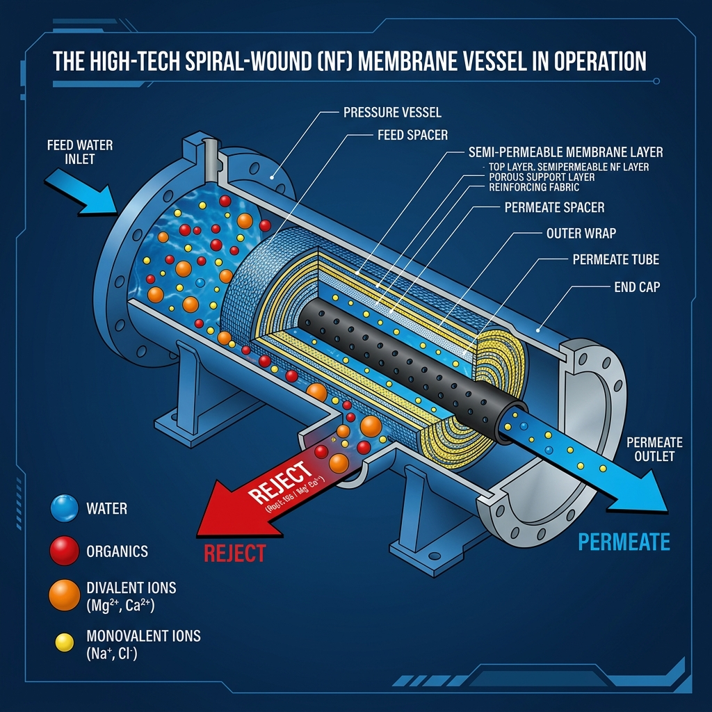
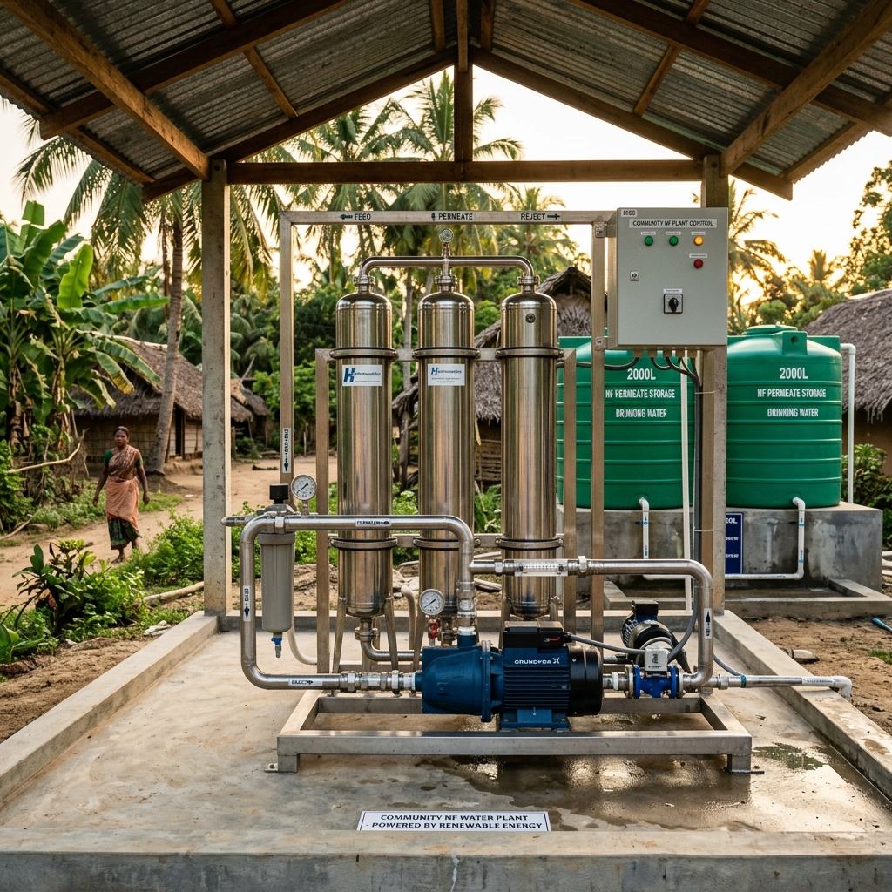
Methodology: Partial Desalination
A pressure-driven membrane that selectively removes hardness, monovalent salts, and nitrates while allowing bone-benefitting minerals to pass through.
Pros
- Low Energy vs RO
- Less water wastage
- Balanced Minerals
Cons
- Produces reject flow
- Partial TDS reduction
Why Selected
The core innovation of this system — it provides effective desalination and hardness removal with a much smaller environmental footprint than full RO.
Chlorination Unit
Methodology: Disinfection
Final chemical dosing to kill residual microbes and provide an ongoing barrier against re-contamination during distribution.
Pros
- Extremely low cost
- Reliable protection
- Residual safety
Cons
- Chemical dosing care
- Mild residual taste
Why Selected
Ensures 100% microbiological safety from the system output to the final community distribution faucet.
Storage Tank (2000 L)
Methodology: Buffering
Final storage of treated water for immediate village use. Facilitates peak demand buffering and chlorination contact time.
Pros
- Contact stability
- Demand management
- Passive storage
Cons
- Cleaning schedule
Why Selected
Required for practical village water security and efficient management of production cycles.
Changes at Each Stage
Tracking value evolution and percentage reduction across the NF treatment train.
| Stage | Parameter | Value After Stage | Reduced By (Abs) | % Reduction |
|---|---|---|---|---|
| 01 Screening | Turbidity | Slight ↓ | - | 10 – 20% |
| 02 Sedimentation | Turbidity | Medium | ↓ 50 – 70% | 50 – 70% |
| 03 Aeration | Ammonia | 0.45 – 0.79 mg/L | ↓ 0.34 – 0.68 | 30 – 60% |
| 04 Bio-Sand | Bacteria | Reduced | ↓ 60 – 90% | 60 – 90% |
| 05 GAC | Odor | Almost Nil | - | 80 – 100% |
| 06 UF | Bacteria | Almost Nil | ~100% removal | 100% |
| 07 Nanofiltration | TDS | 220 – 500 mg/L | ↓ 200 – 480 | 32 – 70% |
| 08 Chlorination | Bacteria | Nil | 100% killed | 100% |
Final Summary: NF Quality Dashboard
| Parameter | Raw Water | Final Water (NF) | Overall % Reduction | Remark |
|---|---|---|---|---|
| TDS | 737 mg/L | 220 – 500 mg/L | 32 – 70% | Balanced Minerals |
| Hardness | High | Significantly reduced | 70 – 90% | System Strength |
| Iron | 0.3 mg/L | 0.05 – 0.1 mg/L | 67 – 83% | Excellent |
| Ammonia | 1.13 mg/L | 0.2 – 0.4 mg/L | 65 – 82% | Good |
| Nitrate | 13.9 mg/L | 5 – 10 mg/L | 50 – 80% | High Performance |
| Bacteria | Present | Nil | 100% | Clinical Safety |
Targeted SDG Contribution
Delivering sustainable, energy-efficient village infrastructure.